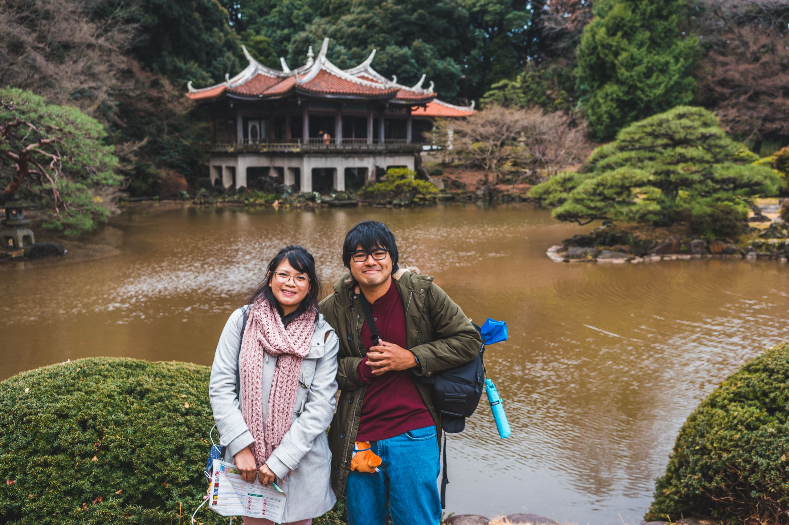

Introduction
I'm a software developer and photography hobbyist in Los Angeles, California.
Being a huge tech enthusiast, I'm always interested in learning more about the newest gadgets, technologies, and software. You'll often find me perusing YouTube videos and articles about tech news and tutorials.
I'm always wanting to learn more and collaborate, so please feel free to reach out via the links on my Contact page!

Software Development
My main language is core Java, often utilizing JavaFX as the front-end platform for desktop work. I also tinker with Android applications and Discord chat bots (JDA being my Discord API of choice). Python and core JavaScript are two other languages I love to run quick scripts with. My public projects are hosted on my Github -- feel free to check it out and leave some feedback!

Photography
These days, I've been enjoying casual smartphone photography using the 18mm Wide Angle Moment Lens -- Moment is an awesome company that produces great smartphone photography gear, including sharp, versatile lenses. I also use a Sony A7 as my more serious body, often paired with a kit zoom or the extremely sharp Zeiss 55mm.
I mostly engage in street photography, but I frequently delve into landscapes and portraits. Check out my Instagram!